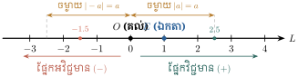
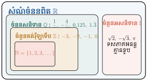
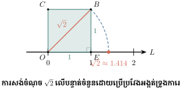
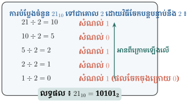

- ប្រាប់បានពីសញ្ញាណនៃចំនួនពិត ប្រព័ន្ធគោល 10 និងប្រព័ន្ធគោល 2
- បង្ហាញ ប្រៀបធៀប និងធ្វើចំណែកថ្នាក់នៃចំនួនពិត
- សម្រួលនិងប្រៀបធៀបកន្សោមរ៉ាឌីកាល់ ហើយបំបាត់រ៉ាឌីកាល់ពីភាគបែង និងសម្រួលរ៉ាឌីកាល់ពីរជាន់
- បំប្លែងប្រព័ន្ធរបាប់គោល 10 ទៅជាគោល 2 និងច្រាសមកវិញ ។
1. ចំនួនពិត
1.1 បន្ទាត់ចំនួន
គេឱ្យចំណុច \(\displaystyle O\) និងចំណុច \(\displaystyle E\) មួយផ្សេងទៀតនៅលើបន្ទាត់ \(\displaystyle L\) ។ បើគេមិនរាប់បញ្ចូលចំណុច \(\displaystyle O\) ទេ នោះគេអាចចែកបន្ទាត់ \(\displaystyle L\) ជាពីរផ្នែកនៅសងខាងនៃចំណុច \(\displaystyle O\) ។ ផ្នែកដែលមានចំណុច \(\displaystyle E\) ហៅថា ផ្នែកវិជ្ជមាន និងផ្នែកដែលគ្មានចំណុច \(\displaystyle E\) ហៅថា ផ្នែកអវិជ្ជមាន ។

ចំពោះគ្រប់ចំណុចនៅលើបន្ទាត់ \(\displaystyle L\) ដែលមានអង្កត់ \(\displaystyle OE\) ជាឯកតាប្រវែង ត្រូវគ្នានឹងចំនួនពិតតែមួយគត់តាមរបៀបដូចខាងក្រោម ៖
- ចំណុច \(\displaystyle O\) ត្រូវនឹងចំនួន \(\displaystyle 0\) (ហៅថា គល់)
- គ្រប់ចំណុចនៅផ្នែកវិជ្ជមាន ហើយមានចម្ងាយ \(\displaystyle s\) ពី \(\displaystyle O\) ត្រូវនឹងចំនួនវិជ្ជមាន \(\displaystyle s\)
- គ្រប់ចំណុចនៅផ្នែកអវិជ្ជមាន ហើយមានចម្ងាយ \(\displaystyle s\) ពី \(\displaystyle O\) ត្រូវនឹងចំនួនអវិជ្ជមាន \(\displaystyle (-s)\)
- ចំនួន \(\displaystyle x\) ដែលត្រូវគ្នានឹងចំណុច \(\displaystyle M\) ហៅថា កូអរដោនេ នៃចំណុច \(\displaystyle M\) កំណត់សរសេរ \(\displaystyle M(x)\) ។
1.2 ការប្រៀបធៀបចំនួនពិត
គោលការណ៍ប្រៀបធៀប ៖
- ចំនួនពិត \(\displaystyle b\) ធំជាង \(\displaystyle a\) (\(\displaystyle b > a\) ឬ \(\displaystyle a < b\)) លុះត្រាតែចំណុច \(\displaystyle b\) នៅខាងស្តាំនៃចំណុច \(\displaystyle a\) លើបន្ទាត់ចំនួនដេក ។
- \(\displaystyle a > b \iff a - b > 0\)
- លក្ខណៈឆ្លង ៖ \(\displaystyle (a < b \text{ និង } b < c) \implies a < c\)
- ត្រីវិភាគ ៖ ចំពោះគ្រប់ចំនួនពិត \(\displaystyle a\) និង \(\displaystyle b\) គេបានទំនាក់ទំនងមួយគត់ក្នុងចំណោម \(\displaystyle a < b\), \(\displaystyle a = b\) ឬ \(\displaystyle a > b\) ។
1.3 តម្លៃដាច់ខាតនៃចំនួនពិត
និយមន័យ ៖ ចម្ងាយពីគល់ \(\displaystyle O\) ទៅចំណុច \(\displaystyle a\) នៅលើបន្ទាត់ចំនួនហៅថា តម្លៃដាច់ខាត នៃចំនួន \(\displaystyle a\) តាងដោយ \(\displaystyle |a|\) ៖
លក្ខណៈសំខាន់ៗ ៖
- ចំពោះគ្រប់ \(\displaystyle a \in \mathbb{R}\) ៖ \(\displaystyle |a| \ge 0\) និង \(\displaystyle |a| = 0 \iff a = 0\)
- \(\displaystyle |-a| = |a|\)
- \(\displaystyle a^2 = |a|^2 = |-a|^2\)
- \(\displaystyle \sqrt{a^2} = |a|\)
គណនា ៖ \(\displaystyle |8| = 8\), \(\displaystyle |-10| = 10\), \(\displaystyle |-1.5| = 1.5\), \(\displaystyle \left|-\dfrac{13}{4}\right| = \dfrac{13}{4}\) ។
លំហាត់គំរូ 2 រកចំនួនពិត \(\displaystyle x\) ដែល \(\displaystyle |x| = 7 \implies x = \pm 7\) ។
2. ចំណែកថ្នាក់នៃចំនួនពិត

ចំណែកថ្នាក់ចំនួន ៖
- សំណុំចំនួនគត់ធម្មជាតិ ៖ \(\displaystyle \mathbb{N} = \{1, 2, 3, 4, \dots\}\)
- សំណុំចំនួនគត់រ៉ឺឡាទីប ៖ \(\displaystyle \mathbb{Z} = \{\dots, -3, -2, -1, 0, 1, 2, 3, \dots\}\)
- សំណុំចំនួនសនិទាន ៖ \(\displaystyle \mathbb{Q} = \left\{\dfrac{m}{n} \;\middle|\; m, n \in \mathbb{Z}, n \neq 0\right\}\)
(អាចសរសេរជាចំនួនទសភាគកំណត់ ឬចំនួនទសភាគខួប ដូចជា \(\displaystyle \dfrac{1}{8} = 0.125\), \(\displaystyle \dfrac{4}{3} = 1.333\dots = 1.\bar{3}\)) - សំណុំចំនួនអសនិទាន ៖ \(\displaystyle \mathbb{I}\) (ជាចំនួនទសភាគអនន្តគ្មានខួប ដូចជា \(\displaystyle \sqrt{2} = 1.4142\dots\), \(\displaystyle \pi = 3.14159\dots\))
- សំណុំចំនួនពិត ៖ \(\displaystyle \mathbb{R} = \mathbb{Q} \cup \mathbb{I}\) (រួមបញ្ចូលទាំងចំនួនសនិទាន និងអសនិទាន) ។

ការសង់ចំនួនអសនិទាន \(\displaystyle \sqrt{2}\) លើបន្ទាត់ចំនួន ៖
តាមទ្រឹស្តីបទពីតាគ័រ ការេដែលមានប្រវែងជ្រុងស្មើ \(\displaystyle 1\) មានប្រវែងអង្កត់ទ្រូង \(\displaystyle d = \sqrt{1^2 + 1^2} = \sqrt{2}\) ។ គេអាចប្រើដែកឈានទម្លាក់ប្រវែងអង្កត់ទ្រូងនេះមកលើបន្ទាត់ចំនួនដើម្បីកំណត់ចំណុច \(\displaystyle \sqrt{2} \approx 1.4142\dots\) ។
3. ការគណនាកន្សោមដែលមានរ៉ាឌីកាល់
3.1 ផលគុណ និងផលចែកនៃឫសការេ
រូបមន្តគ្រឹះ ៖ ចំពោះចំនួនពិតវិជ្ជមាន \(\displaystyle a > 0, b > 0\) ៖
គណនា ៖
- \(\displaystyle \sqrt{20} = \sqrt{4 \times 5} = 2\sqrt{5}\)
- \(\displaystyle \sqrt{10} \times \sqrt{45} = \sqrt{10 \times 45} = \sqrt{450} = \sqrt{225 \times 2} = 15\sqrt{2}\)
- \(\displaystyle \dfrac{\sqrt{27}}{\sqrt{3}} = \sqrt{\dfrac{27}{3}} = \sqrt{9} = 3\)
- \(\displaystyle \sqrt{8} - \sqrt{18} + \sqrt{72} = 2\sqrt{2} - 3\sqrt{2} + 6\sqrt{2} = 5\sqrt{2}\) ។
3.2 ការប្រៀបធៀបឫសការេនៃចំនួនវិជ្ជមាន
ទ្រឹស្តីបទ ៖ ចំពោះចំនួនពិតវិជ្ជមាន \(\displaystyle a > 0\) និង \(\displaystyle b > 0\) ៖
ប្រៀបធៀប \(\displaystyle 2\sqrt{7}\) និង \(\displaystyle 3\sqrt{3}\) ៖
ដំណោះស្រាយ ៖
- បញ្ចូលក្នុងរ៉ាឌីកាល់ ៖ \(\displaystyle 2\sqrt{7} = \sqrt{2^2 \times 7} = \sqrt{28}\)
- \(\displaystyle 3\sqrt{3} = \sqrt{3^2 \times 3} = \sqrt{27}\)
- ដោយ \(\displaystyle 28 > 27 \implies \sqrt{28} > \sqrt{27}\)
ដូច្នេះ \(\displaystyle 2\sqrt{7} > 3\sqrt{3}\) ។
3.3 ការបំបាត់រ៉ាឌីកាល់ពីភាគបែង (Rationalization)
លំហាត់គំរូ 1 (ភាគបែងមានតួទោល) ៖
លំហាត់គំរូ 2 (គុណកន្សោមឆ្លាស់) ៖
3.4 ការសម្រួលកន្សោមដែលមានរ៉ាឌីកាល់ពីរជាន់ (Nested Radicals)
រូបមន្តសម្រួលរ៉ាឌីកាល់ពីរជាន់ ៖
ចំពោះចំនួនពិតវិជ្ជមាន \(\displaystyle a > 0, b > 0\) បើគេរកឃើញចំនួនពីរ \(\displaystyle u\) និង \(\displaystyle v\) (\(\displaystyle u \ge v\)) ដែល \(\displaystyle \begin{cases} u + v = a \\ uv = b \end{cases}\) នោះ ៖
សម្រួលកន្សោម \(\displaystyle \sqrt{7 + 2\sqrt{10}}\) ៖
ដំណោះស្រាយ ៖ រក \(\displaystyle u, v\) ដែល \(\displaystyle u + v = 7\) និង \(\displaystyle uv = 10 \implies u = 5, v = 2\) ៖
សម្រួលកន្សោម \(\displaystyle \sqrt{8 - 2\sqrt{15}}\) ៖
ដំណោះស្រាយ ៖ រក \(\displaystyle u, v\) ដែល \(\displaystyle u + v = 8\) និង \(\displaystyle uv = 15 \implies u = 5, v = 3\) ៖
លំហាត់គំរូ 3 (បំប្លែងឱ្យមានមេគុណ 2) សម្រួល \(\displaystyle \sqrt{7 + \sqrt{24}}\) ៖
ដំណោះស្រាយ ៖ \(\displaystyle \sqrt{24} = \sqrt{4 \times 6} = 2\sqrt{6}\) នាំឱ្យ \(\displaystyle u+v=7, uv=6 \implies u=6, v=1\) ៖
4. ប្រព័ន្ធរបាប់ (Number Systems)
4.1 ប្រព័ន្ធរបាប់គោល 10 (Decimal System)
ប្រព័ន្ធរបាប់គោល 10 ប្រើនិមិត្តសញ្ញាលេខចំនួន ១០ គឺ \(\displaystyle 0, 1, 2, 3, 4, 5, 6, 7, 8, 9\) ដោយខ្ទង់នីមួយៗតំណាងឱ្យស្វ័យគុណនៃ 10 (\(\displaystyle 10^0, 10^1, 10^2, 10^3, \dots\)) ។
ទម្រង់ពន្លាតនៃចំនួនក្នុងប្រព័ន្ធគោល 10 ៖
ឧទាហរណ៍ ៖
- \(\displaystyle 147 = 1 \times 10^2 + 4 \times 10^1 + 7\)
- \(\displaystyle 1234 = 1 \times 10^3 + 2 \times 10^2 + 3 \times 10^1 + 4\)
4.2 ប្រព័ន្ធរបាប់គោល 2 (Binary System)
ប្រព័ន្ធរបាប់គោល 2 ប្រើតែលេខពីរគត់គឺ \(\displaystyle 0\) និង \(\displaystyle 1\) ដែលជាមូលដ្ឋានគ្រឹះនៃប្រព័ន្ធកុំព្យូទ័រ និងបច្ចេកវិទ្យាឌីជីថល ។ ខ្ទង់នីមួយៗតំណាងឱ្យស្វ័យគុណនៃ 2 (\(\displaystyle 2^0, 2^1, 2^2, 2^3, \dots\)) ។
ទម្រង់ពន្លាតនៃចំនួនក្នុងប្រព័ន្ធគោល 2 ៖
ឧទាហរណ៍ ៖ \(\displaystyle 1101_2 = 1 \times 2^3 + 1 \times 2^2 + 0 \times 2^1 + 1 \times 2^0\) ។
4.3 ការបំប្លែងគោល 2 ទៅជាគោល 10
បំប្លែងចំនួន \(\displaystyle 100110_2\) ទៅជាចំនួនក្នុងប្រព័ន្ធគោល 10 ៖
ដំណោះស្រាយ ៖
ដូច្នេះ \(\displaystyle 100110_2 = 38_{10}\) ។
4.4 ការបំប្លែងគោល 10 ទៅជាគោល 2
ដើម្បីបំប្លែងចំនួនក្នុងប្រព័ន្ធគោល 10 ទៅជាគោល 2 គេយកចំនួននោះទៅចែកបន្តបន្ទាប់នឹង 2 រហូតដល់ផលចែកស្មើ 0 ហើយយកសំណល់ពីក្រោមឡើងលើមកសរសេរ ។

បំប្លែងចំនួន \(\displaystyle 21_{10}\) ទៅជាប្រព័ន្ធគោល 2 ៖
ដំណោះស្រាយ ៖
- \(\displaystyle 21 \div 2 = 10\) សំណល់ \(\displaystyle 1\)
- \(\displaystyle 10 \div 2 = 5\) សំណល់ \(\displaystyle 0\)
- \(\displaystyle 5 \div 2 = 2\) សំណល់ \(\displaystyle 1\)
- \(\displaystyle 2 \div 2 = 1\) សំណល់ \(\displaystyle 0\)
- \(\displaystyle 1 \div 2 = 0\) សំណល់ \(\displaystyle 1\)
អានសំណល់ពីក្រោមឡើងលើ គេបាន \(\displaystyle 21_{10} = 10101_2\) ។
លំហាត់
- បញ្ជាក់តម្លៃនៃចំនួនពិត \(\displaystyle x\) ដោយប្រើសញ្ញាវិសមភាពដោយដឹងថា \(\displaystyle x\) ជាចំនួនដែលមានផ្នែកគត់មានលេខពីរខ្ទង់ ៖
ចម្លើយ ៖ \(\displaystyle 10 \le x < 100\) ឬ \(\displaystyle -100 < x \le -10\) ។ គណនាកន្សោម \(\displaystyle \sqrt{48} - \dfrac{\sqrt{27}}{2} + \dfrac{1}{\sqrt{12}}\) ៖
ដំណោះស្រាយ ៖\[\sqrt{48} = 4\sqrt{3}, \quad \frac{\sqrt{27}}{2} = \frac{3\sqrt{3}}{2}, \quad \frac{1}{\sqrt{12}} = \frac{1}{2\sqrt{3}} = \frac{\sqrt{3}}{6}\]\[4\sqrt{3} - \frac{3\sqrt{3}}{2} + \frac{\sqrt{3}}{6} = \frac{24\sqrt{3} - 9\sqrt{3} + \sqrt{3}}{6} = \frac{16\sqrt{3}}{6} = \frac{8\sqrt{3}}{3}\]រកតម្លៃកន្សោម ចំពោះ \(\displaystyle x = \dfrac{1}{\sqrt{7} - \sqrt{5}} = \dfrac{\sqrt{7} + \sqrt{5}}{2}\) និង \(\displaystyle y = \dfrac{1}{\sqrt{7} + \sqrt{5}} = \dfrac{\sqrt{7} - \sqrt{5}}{2}\) ៖
- ក. \(\displaystyle x + y = \dfrac{(\sqrt{7}+\sqrt{5}) + (\sqrt{7}-\sqrt{5})}{2} = \sqrt{7}\)
- ខ. \(\displaystyle xy = \left(\dfrac{\sqrt{7}+\sqrt{5}}{2}\right)\left(\dfrac{\sqrt{7}-\sqrt{5}}{2}\right) = \dfrac{7 - 5}{4} = \dfrac{1}{2}\)
- គ. \(\displaystyle x^2 y + xy^2 = xy(x+y) = \dfrac{1}{2}\sqrt{7} = \dfrac{\sqrt{7}}{2}\)
- ឃ. \(\displaystyle \dfrac{y}{x} + \dfrac{x}{y} = \dfrac{x^2 + y^2}{xy} = \dfrac{(x+y)^2 - 2xy}{xy} = \dfrac{7 - 1}{1/2} = 12\)
- ក. សម្រួល \(\displaystyle (1 + \sqrt{2} + \sqrt{3})(1 + \sqrt{2} - \sqrt{3}) = (1+\sqrt{2})^2 - 3 = 1 + 2\sqrt{2} + 2 - 3 = 2\sqrt{2}\)
- ខ. បំបាត់រ៉ាឌីកាល់ពីភាគបែងនៃ \(\displaystyle \dfrac{1}{1 + \sqrt{2} - \sqrt{3}} = \dfrac{1+\sqrt{2}+\sqrt{3}}{2\sqrt{2}} = \dfrac{\sqrt{2} + 2 + \sqrt{6}}{4}\)
សរសេរជាទម្រង់ពន្លាតគោល 10 ៖
- ក. \(\displaystyle 123 = 1 \times 10^2 + 2 \times 10^1 + 3\)
- ខ. \(\displaystyle 4321 = 4 \times 10^3 + 3 \times 10^2 + 2 \times 10^1 + 1\)
សរសេរជាចំនួនក្នុងប្រព័ន្ធគោល 10 ៖
- ក. \(\displaystyle (3 \times 10^5) + (2 \times 10^3) + (1 \times 10) + 4 = 302014\)
- ខ. \(\displaystyle (8 \times 10^7) + (7 \times 10^6) + (6 \times 10^4) + (5 \times 10^3) + (4 \times 10^2) + 3 = 87065403\)
បំប្លែងទៅជាចំនួនក្នុងប្រព័ន្ធគោល 10 ៖
- ក. \(\displaystyle 1001_2 = 1(8) + 0(4) + 0(2) + 1 = 9\)
- ខ. \(\displaystyle 100001_2 = 1(32) + 1 = 33\)
- គ. \(\displaystyle 10011001_2 = 128 + 16 + 8 + 1 = 153\)
- ឃ. \(\displaystyle 10101001_2 = 128 + 32 + 8 + 1 = 169\)
បំប្លែងទៅជាចំនួនក្នុងប្រព័ន្ធគោល 2 ៖
- ក. \(\displaystyle 19 = 16 + 2 + 1 = 10011_2\)
- ខ. \(\displaystyle 123 = 64 + 32 + 16 + 8 + 2 + 1 = 1111011_2\)
ប្រៀបធៀប និងគណនាផលដក ៖
- ក. \(\displaystyle 10_{10}\) និង \(\displaystyle 10_2\) ៖ \(\displaystyle 10_2 = 2 \implies 10_{10} > 10_2\) ហើយផលដកគឺ \(\displaystyle 10 - 2 = 8\)
- ខ. \(\displaystyle 100_{10}\) និង \(\displaystyle 100_2\) ៖ \(\displaystyle 100_2 = 4 \implies 100_{10} > 100_2\) ហើយផលដកគឺ \(\displaystyle 100 - 4 = 96\)
- គ. \(\displaystyle 123_{10}\) និង \(\displaystyle 1101_2\) ៖ \(\displaystyle 1101_2 = 8 + 4 + 1 = 13 \implies 123_{10} > 1101_2\) ហើយផលដកគឺ \(\displaystyle 123 - 13 = 110\)
ខ្លឹមសារ៖ សៀវភៅពុម្ពគណិតវិទ្យាថ្នាក់ទី១០ របស់ក្រសួងអប់រំ យុវជន និងកីឡា · វាយអត្ថបទ គូររូបភាពឡើងវិញ និងរៀបចំលើអនឡាញដោយលោកគ្រូ សាន សុខលី សម្រាប់ការសិក្សាដោយឥតគិតថ្លៃ និងមិនរកប្រាក់ចំណេញ។ មិនមែនជាការបោះពុម្ពផ្លូវការរបស់ក្រសួងទេ។